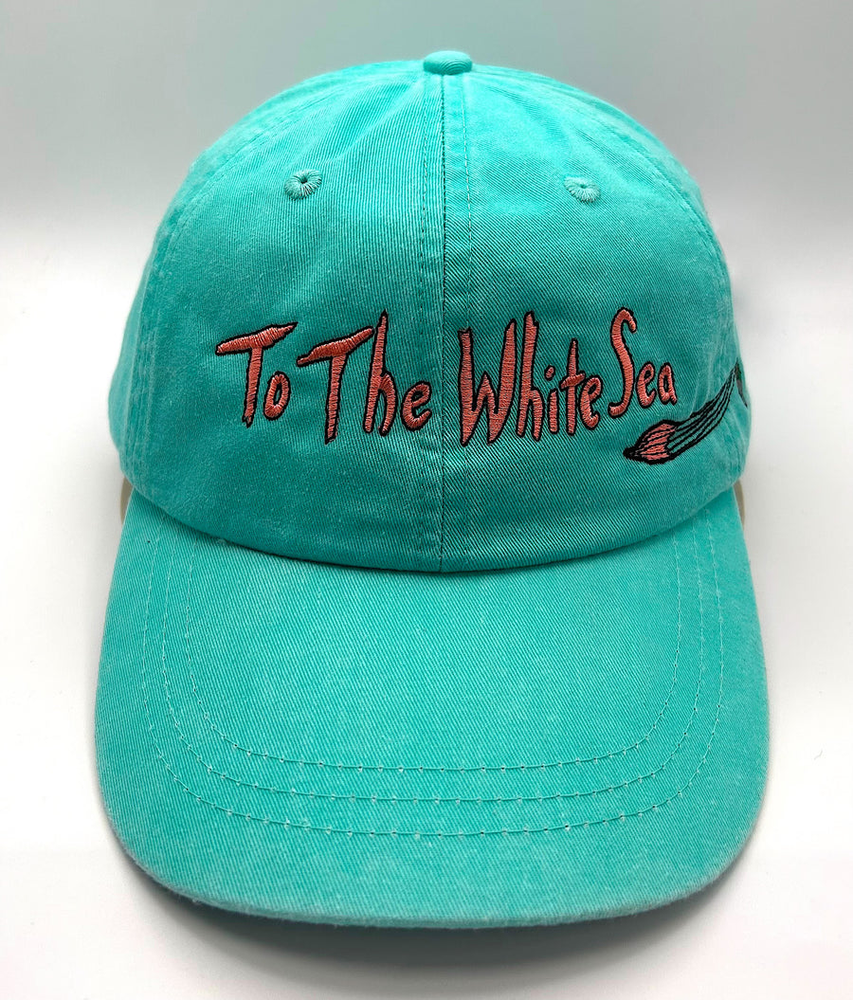
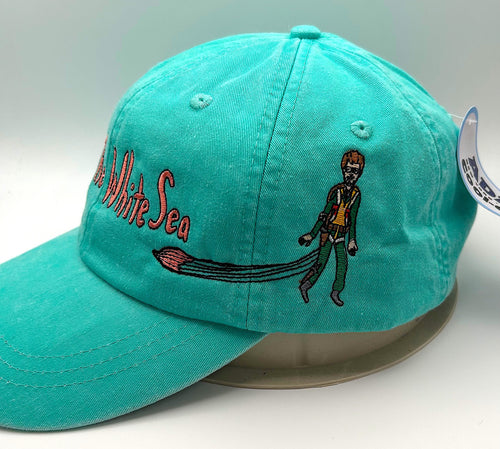
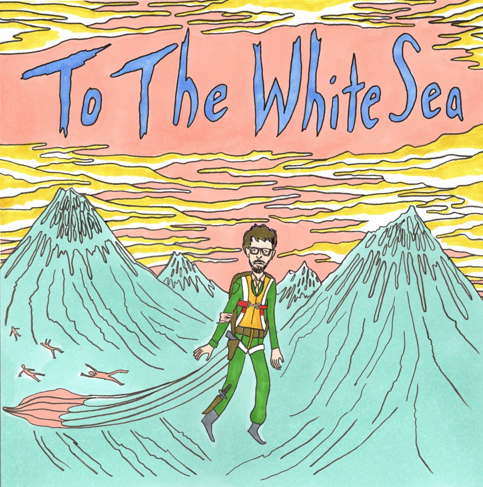

'To The White Sea' hat
$40.00
Designed by the lovely people at KC Screenprint. Show your support for the show, and for the Coen movie that could have been.
One size fits all. Pick it up at the show for free, or we ship it.
A podcast about the Coen brothers movie that never got made, and everything that fell out of the sky with it.



$40.00
Designed by the lovely people at KC Screenprint. Show your support for the show, and for the Coen movie that could have been.
One size fits all. Pick it up at the show for free, or we ship it.
New episodes wherever you get your podcasts. Start at the beginning, or don't. It's not that kind of story.